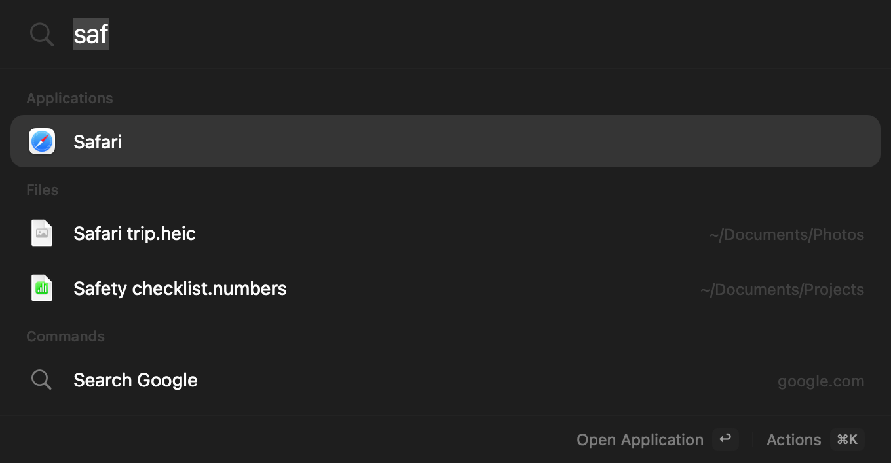
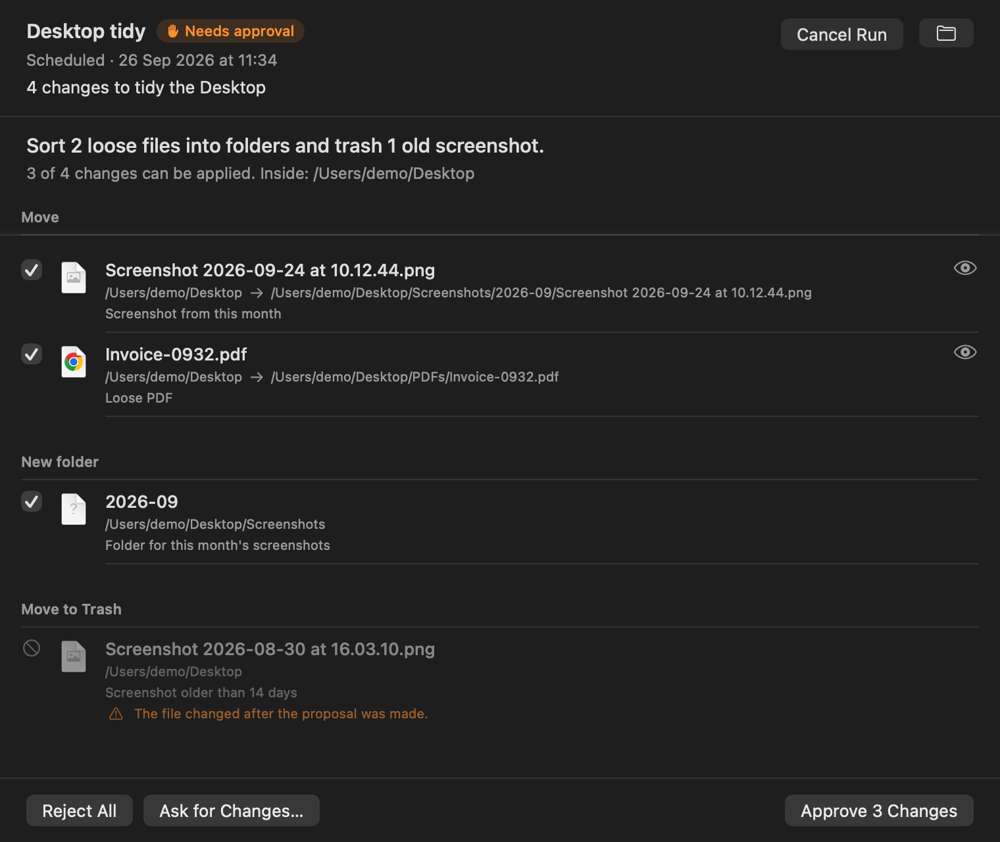
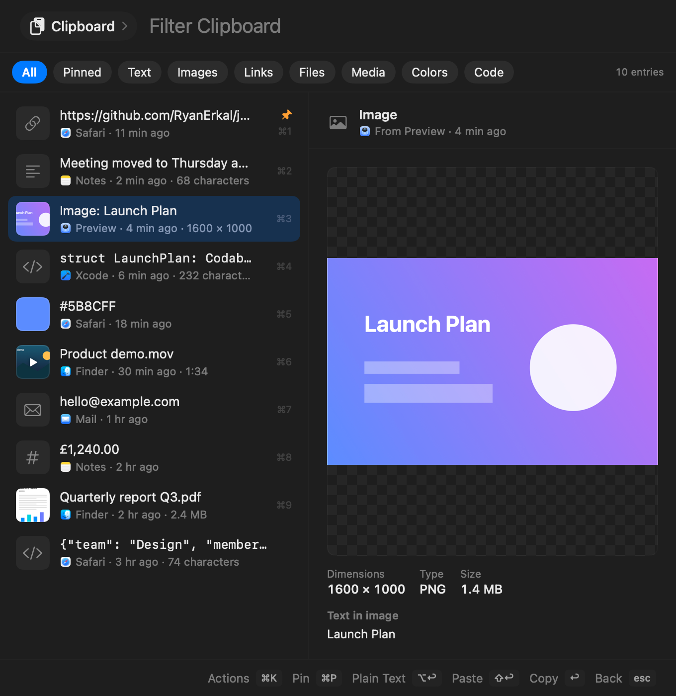

Open apps, find files, and move windows.
Press ⌥Space anywhere on your Mac. Type what you need and press Return.
Free and open source macOS 14+ Apple silicon and Intel
Try a query

Files
kind:pdf in:downloads- Find PDFs in Downloads.
Windows
notes left half- Open Notes on the left half of your screen.
Ports
port 3000- See which process is listening on port 3000.
Timers
5m tea- Start a five-minute timer for tea.
Move windows with a keystroke.
Type left half to tile the front window. Repeat the shortcut to cycle through widths, or move the window to another display.
Window control needs Accessibility access.
Your inbox, inside the launcher.
Type inbox to pick up where you left off. Space pages through a message, ⌘E archives it, and Escape keeps an edited draft.

See your next three days.
Type calendar to see what’s next or join a meeting. Add and move events on your Mac calendars. Connect Google calendars for a read-only view alongside them.

Schedule work on your Mac.
Run a script or ask Codex or Claude for a report, even when Jevcast is closed. Agents use your signed-in CLI. Review proposed file changes before applying them.

Find something you copied.
Type clip to search text, links, files, and even words in screenshots. Press Return to copy a result. History stays on your Mac and skips password managers.

What stays on your Mac?
App and file search, window shortcuts, and clipboard history work locally. Jevcast needs no account and collects no analytics.
The app checks GitHub for updates. Mail can load remote images. You choose which accounts to connect and whether to send requests to AI providers.
Network requests and permissionsInstall
brew install zig@0.15
xcodebuild -downloadComponent MetalToolchain
git clone https://github.com/RyanErkal/jevcast.git
cd jevcast
scripts/build.shNeeds Xcode 26 or later with its Metal Toolchain, and Zig 0.15 for the terminal. Runs on macOS 14 or later. Read the README
Install Jevcast from the official source repository: https://github.com/RyanErkal/jevcast. Check that this Mac can run Xcode 26 or later and has it installed; otherwise stop and report the requirement. Clone the repository and check out its latest published release tag; if there is no release tag, stop. Verify that `git remote get-url origin` resolves exactly to `https://github.com/RyanErkal/jevcast.git`. If the checkout has `scripts/ghosttykit.sh`, install Homebrew's `zig@0.15` and Xcode's Metal Toolchain (`xcodebuild -downloadComponent MetalToolchain`), then run `scripts/ghosttykit.sh`. Run `swift test` and `scripts/build.sh`, then verify the app with `codesign --verify --deep --strict --verbose=2 "dist/Jevcast.app"`. After those checks pass, quit any running Jev Launcher or Jevcast. Back up an existing `/Applications/Jevcast.app` before replacing it, keep all preferences and settings, install the new app, and open it. Do not bypass Gatekeeper or change macOS security settings.
What’s new
-
1.24.1
- Mixed inboxes now show unread dots only. Hover over a subject to see which account received the message.
Questions
Can I keep using Spotlight or Raycast?
You can use them together. If Option–Space is taken, choose a different shortcut in Jevcast Settings.
How do updates work?
Jevcast checks GitHub daily. When a release is ready, use the install instructions above to update.